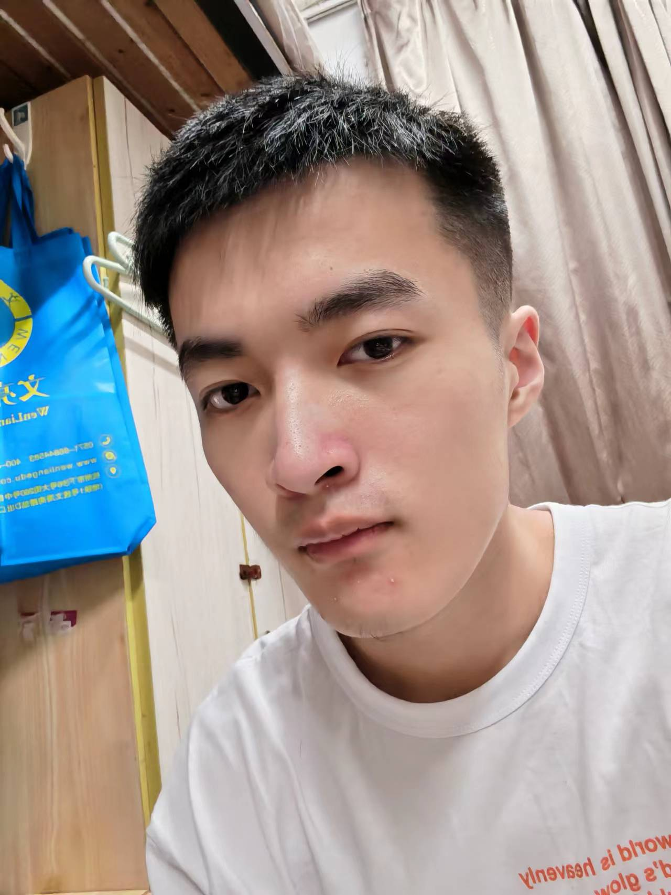

Sumail's resume
My career profile
As a junior student, I am introverted, easy-going and cheerful. I usually pay attention to my appearance. In my spare time, I like listening to music, watching movies, playing games and reading magazines. My favorite sport is basketball, and I occasionally go mountain climbing.
I have no special admiration for anyone in my heart, especially some celebrities. I feel that they are too far away from my world. I think everyone around me has something worth learning. I am easy-going and get along well with others. I have a good reputation among my circle of friends, but I am not good at dealing with strangers. Stick to the rules, innovation ability is not strong, but diligent, serious, hard-working, anti - attack ability. The giant of theory, the weak of action, the mind is always a lot of ideas, but never put into action. Lack of perseverance, perseverance, learning is "three days fishing, two days sun net", so that in professional knowledge can only be sloppy, sometimes sentimental. Lack confidence in yourself and care about what others think of you.
The years' work has made me deeply aware of the coexistence of opportunities and challenges, success and bitterness. To participate in this competition, I would like to know myself in the truth and pragmatism, in the continuous pursuit of positive enterprising, in the struggle to achieve self-value.
Looking forward to the future I can show a better self on the job.